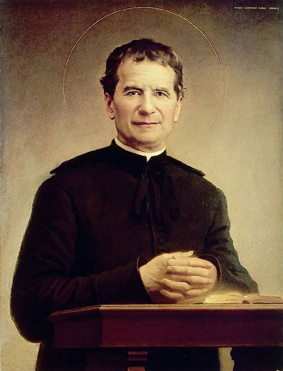
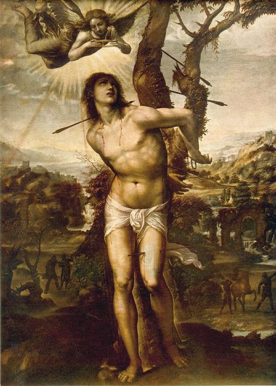
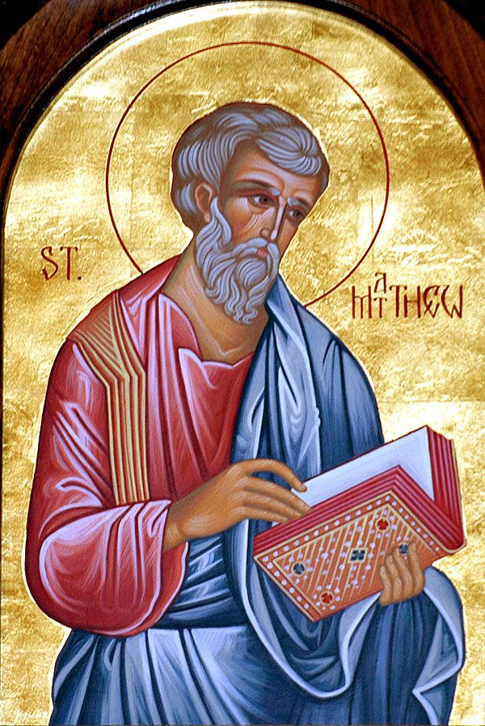

St. Mary’s Church, Manalumkal – Ward List
Parish Units
St Mary's Unit
St Joseph Unit
St Alphonsa Unit
Infant Jesus Unit
St Chavra Unit

St Donbosco Unit
St Geevarghese Unit
St James Unit

St Sebastian Unit
St Assissi Unit
St John Paul II Unit
St Antony Unit
St Xavier Unit
St Thomas Unit

St Mathews Unit
ST Mother Theresa Unit
Bl. Kunjachan Unit
St Evuprasia Unit